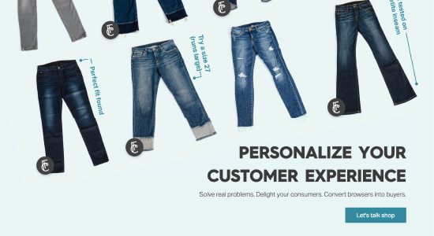
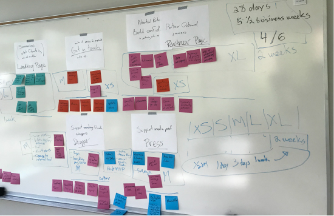
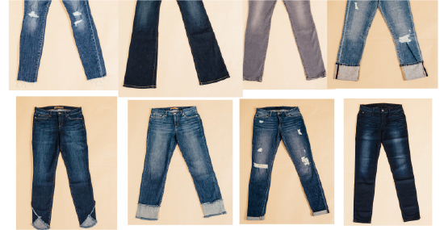
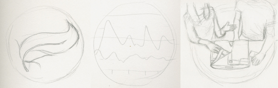

Fitcode Website
Dec 2014 - Aug 2018
Role: Scrum Master, UX/Web designer, Front-end Developer

The Fitcode website has gone through a few phases over its lifetime. I have been involved in the website since it’s launch in 2015 but will focus on the latest iteration as a case study on how I worked at Fitcode. Since it was a small team I took on many roles including strategy, UX design, visual design, HTML/CSS code development, and QA work.
Problem
Fitcode started out as hub for shoppers, and a proof of concept for our fit finding technology, but as we grew we began to focus more on partnering directly with jeans brands by providing an integrated Fitcode tool directly on their site. We realized we needed our site to cater more to potential business partners and less to retail shoppers. But that meant we had to redo everything and do it quickly.
Process
When our CEO came to us with the need to change our website no one knew exactly what the new site would be or how long it was going to take. I decided to step up and volunteered to lead a series of brainstorm and strategy meetings. Using concepts from the book “The Elements of User Experience” by Jesse James Garrett and Agile methodology I sketched out a plan for how to get the product team organized.
In the kickoff meeting I had the team mainly focus on three things, what are the business needs for the website, what are the user’s needs, and what does success look like? Out of that I wrote a list of user stories, which led to a list of potential features. Then I organized a white board with post-it notes representing each feature and hosted an MVP meeting. The team reviewed, revised and organized the features. We decided what our goals were for a Minimum Viable Product. Then we estimated the amount of time needed for the product team to build each feature and added it all up to devise our schedule and launch date.
White board after a planning meeting
I took all this info and wrote scrum tickets for each feature that we agreed to build, filling up the backlog, and making sure all the insights from the meeting were captured and organized to fit into our weekly scrum process.
Now I could focus on design. I made a site map and several user flows, noting as I went that the site itself was actually pretty straight forward, so I didn’t dwell on the IA or wireframes very long, just mapped out what I needed to review with the team and answer questions as we went along.
Example of some user flows
Wireframe for Landing Page
The bulk of the design work went into coordinating content with our Copywriter / Marketing Director, art directing photoshoots, executing spot illustrations, mocking up drafts to review with the team, and iterating on my designs until final drafts were agreed upon.
A rough draft of the hero image on the Partner page showing original photos
Sketches of spot illustrations on Partner page
Then I switched gears and started pitching in with the front-end development of the site, writing markup, organizing sitewide CSS styles, then page layout and feature specific styles, optimizing images and .svg files and resolving any issues related to executing my designs in the front-end code.
As we got closer to launch I transitioned into QA work, checking features as they were completed by the dev team, and organizing a bug bash where the whole product team pitches in to test the site.
Results
Fitcode was able to pivot and create a website that spoke more directly to potential partners in under 2 months. Here are samples of the final designs that went live.
Desktop Experience

Landing page

Partner page
Mobile Experience

Landing page


{kind=link}
{kind=link}
{kind=link}
{kind=link}
{kind=link}